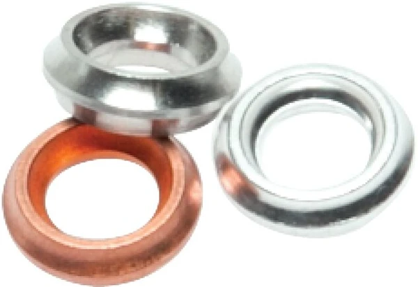

Rò rỉ tại điểm nối đồng hồ thường do gioăng sai loại hoặc sai vật liệu. Chọn đúng gioăng/vòng đệm theo EN 837-1 / DIN 16258 đảm bảo kín khít và an toàn. Fast Group Engineering là đại lý cung cấp hàng chính hãng WIKA (Germany) tại Việt Nam.

Gợi ý chọn nhanh
- Cần bảo vệ đồng hồ trước hơi nóng, rung, xung áp hoặc ăn mòn.
- Cần lắp van cô lập để tháo/kiểm định gauge.
- Cần xử lý lệch chuẩn ren hoặc gioăng làm kín.
- Ren vào/ra, vật liệu và áp suất làm việc.
- Môi chất, nhiệt độ, tiêu chuẩn DIN/EN cần dùng.
- Loại phụ kiện: valve, siphon, snubber, gasket, adapter.
- Danh mục phụ kiện đồng hồ áp suất WIKA.
- Bài van chặn, siphon, snubber.
- Bài gioăng và đầu nối chuyển ren.
Tóm tắt nhanh
- Hai loại phổ biến: profile sealing ring (Profildichtring) và flat gasket (phẳng).
- Chuẩn tham chiếu: EN 837-1 và DIN 16258 cho kích thước & kiểu.
- Vật liệu chọn theo môi chất, áp, nhiệt độ: đồng (Cu), inox, PTFE, sợi...
- Sai vật liệu/kích thước = rò rỉ, chai cứng, hỏng ren.

Các loại gioăng đồng hồ
| Loại | Đặc điểm | Dùng khi |
|---|---|---|
| Profile sealing ring | Vòng có biên dạng, ép kín tốt trên ren G | Kết nối ren BSP phổ biến |
| Flat gasket (phẳng) | Vòng đệm phẳng theo DIN 16258 | Bề mặt phẳng, mặt bích nhỏ |
| Dichtkantenring | Vòng có cạnh làm kín | Yêu cầu kín cao |
Chọn vật liệu gioăng theo môi chất
| Vật liệu | Ưu điểm | Phù hợp |
|---|---|---|
| Đồng (Cu) | Mềm, kín tốt, kinh tế | Nước, khí, dầu phổ thông |
| Inox | Bền, chịu nhiệt/áp cao | Áp/nhiệt cao |
| PTFE | Kháng hóa chất tốt | Môi chất ăn mòn |
| Sợi/graphite | Chịu nhiệt | Hơi, nhiệt độ cao |
Chọn vật liệu tương thích môi chất & nhiệt độ; đồng phổ biến nhưng không hợp mọi hóa chất.
Vì sao hay rò rỉ?
- Dùng sai kích thước ren (gioăng lỏng/chật).
- Tái sử dụng gioăng cũ đã chai/biến dạng.
- Sai vật liệu cho môi chất/nhiệt độ → chai cứng, nứt.
- Siết quá lực làm bẹp, hoặc thiếu lực không đủ kín.
Cách chọn (Checklist)
- [ ] Cỡ ren đồng hồ (G⅛, G¼, G½...).
- [ ] Loại: profile ring hay flat gasket.
- [ ] Vật liệu theo môi chất & nhiệt độ.
- [ ] Áp làm việc.
- [ ] Dùng gioăng mới mỗi lần lắp lại.
Lưu ý lắp đặt
- Với ren BSP song song (G) dùng gioăng làm kín ở mặt; ren NPT côn làm kín bằng ren (thường không dùng gioăng phẳng).
- Không quấn quá nhiều băng tan cho ren G — gioăng mới là giải pháp đúng.
- Siết đủ lực theo khuyến nghị, tránh làm hỏng ren/đồng hồ.
EN 837-1 và DIN 16258 quy định gì?
Hai tiêu chuẩn này giúp gioăng đồng hồ được chuẩn hóa về kích thước và biên dạng, nên bạn có thể đặt đúng loại mà không cần đo thủ công từng chi tiết. EN 837-1 là tiêu chuẩn nền cho đồng hồ áp suất ống Bourdon, bao gồm cả yêu cầu về kết nối và làm kín. DIN 16258 quy định các vòng đệm phẳng dùng cho đồng hồ. Khi RFQ ghi rõ "gioăng theo DIN 16258 cho ren G½", nhà cung cấp hiểu ngay đúng cỡ và kiểu — tránh nhầm lẫn và rò rỉ sau lắp.
Bảng chọn nhanh gioăng theo môi chất & nhiệt độ
| Môi chất | Nhiệt độ | Gioăng khuyến nghị |
|---|---|---|
| Nước, khí, dầu sạch | Thường | Đồng (Cu) |
| Hơi nóng | Cao | Sợi/graphite hoặc inox |
| Axit/hóa chất | Thường–cao | PTFE |
| Áp cao | Cao | Inox |
Sai lầm thường gặp
- Tái dùng gioăng đồng cũ: đã bị ép biến dạng, gần như chắc chắn rò khi lắp lại.
- Quấn băng tan cho ren G: ren G làm kín ở mặt bằng gioăng, không phải ở ren; băng tan chỉ tốn công.
- Chọn đồng cho hóa chất ăn mòn: đồng bị ăn mòn, nứt và rò; cần PTFE.
- Siết quá tay: làm bẹp gioăng và hỏng ren; siết đủ lực theo khuyến nghị.
- Dùng gioăng phẳng cho ren NPT côn: sai nguyên lý làm kín, dẫn tới rò.
FAQ
Ren G và NPT dùng gioăng khác nhau không? Có — G (song song) cần gioăng làm kín mặt; NPT (côn) làm kín bằng ren, dùng chất làm kín ren.
Có tái dùng gioăng đồng được không? Không nên; gioăng đã ép biến dạng, dễ rò khi lắp lại.
Chọn đồng hay PTFE? Đồng cho phổ thông; PTFE khi môi chất ăn mòn.
Gioăng có phải phụ tùng cần thay định kỳ không?
Không có chu kỳ cố định, nhưng nên thay mới mỗi lần tháo lắp đồng hồ, và kiểm tra khi phát hiện rò hay khi bảo trì đường ống.
Cách xác định đúng cỡ gioăng
Cỡ gioăng đi theo cỡ ren của chân đồng hồ, không phải theo đường kính mặt. Cách nhanh nhất: xem part number hoặc nhãn đồng hồ để biết ren (G⅛, G¼, G½, G1...), rồi chọn gioăng cùng cỡ theo DIN 16258. Nếu không có tài liệu, dùng thước cặp đo đường kính ngoài ren và dưỡng ren để xác định bước ren, sau đó tra cỡ tương ứng. Với đồng hồ Ø63 thường gặp ren G¼, còn Ø100/160 thường G½ — nhưng luôn kiểm tra thực tế vì có ngoại lệ. Khi không chắc, gửi ảnh chân ren và cỡ đo, chúng tôi xác định giúp để tránh đặt nhầm.
Profile ring hay flat gasket — khác biệt thực tế
Profile sealing ring (vòng có biên dạng) được thiết kế ép khít lên mặt tì của ren G, cho lực làm kín tập trung và tin cậy hơn ở áp cao; đây là lựa chọn mặc định cho hầu hết đồng hồ WIKA ren BSP. Flat gasket (vòng phẳng) đơn giản, rẻ, phù hợp bề mặt phẳng và áp vừa phải. Với cùng một cỡ ren, profile ring thường "kín ngay lần đầu" tốt hơn, còn flat gasket cần bề mặt tì thật phẳng và sạch. Nếu điểm đo quan trọng hoặc áp cao, ưu tiên profile ring đúng chuẩn.
Nên có sẵn bộ gioăng dự phòng
Gioăng là chi tiết rẻ nhưng thiếu nó thì cả cụm đo phải chờ. Với nhà máy vận hành nhiều đồng hồ, nên dự trữ sẵn một bộ gioăng theo các cỡ ren đang dùng (thường G¼ và G½) bằng vật liệu phù hợp môi chất chính. Mỗi lần bảo trì, tháo đồng hồ là thay gioăng mới — thói quen này gần như loại bỏ hoàn toàn sự cố rò rỉ tại điểm nối và giúp công tác bảo trì nhanh gọn, không phải dừng chờ vật tư.
Gioăng graphite và PTFE, khi nào chọn loại nào?
Graphite chịu nhiệt rất tốt, hợp hơi nóng và nhiệt độ cao; PTFE mạnh về kháng hóa chất nhưng giới hạn nhiệt thấp hơn. Môi chất vừa nóng vừa ăn mòn thì cần cân nhắc kỹ hoặc dùng giải pháp cách ly như màng ngăn.
Bôi mỡ hay chất làm kín lên gioăng có nên không?
Với gioăng kim loại làm kín ở mặt thì không cần; giữ mặt tì sạch và phẳng là đủ. Với ren NPT côn mới dùng chất làm kín ren (băng tan/keo) đúng loại tương thích môi chất.
Cần tư vấn hoặc báo giá gioăng đồng hồ WIKA?
Gửi cỡ ren, môi chất, áp/nhiệt để nhận đúng loại và báo giá.
- Email: minhduc@fastgroup.vn · Zalo: (+84) 938 888 958
Fast Group Engineering – đại lý cung cấp hàng chính hãng WIKA (Germany) tại Việt Nam.
Bài liên quan: [Chọn Ø mặt & ren] · [Van chặn đồng hồ áp suất] · [Đầu nối chuyển ren] · [Tiêu chuẩn EN 837-1]